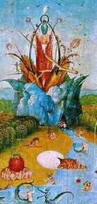

Poemas a la Sierra de la Demanda
Una brisa placentera
me llegó desde tus adentros
de tus valles de tus cerros
de tus gentes de tus pueblos.
Sólo aquí aprecias
la auténtica belleza
donde todo sobra
donde tienes todo.
Aquí en las altas cumbres
sólo donde el aire está puro
libre de codicias y egoísmos
aun se respira libertad.
El crepúsculo de mi deseo
es mi horizonte de grandeza.
El arroyo fluye libre
mientras sus aguas
transportan dulces melodías
va abriendo paso a la vida
bañando de riqueza los valles
serpenteando, siempre vivo.
Yo quiero ser como él
siempre libre, siempre vivo
serpenteando entre tanta hipocresía
codicias y egoísmos.
Yo quiero ser manantial
donde reine la belleza
libre de materialismos
libre de falsas creencias.
A la vera de tu cauce
apago mi sed amigo mío
calmo mis pies cansados
hago un alta en el camino.
Siguiendo arroyo Tobía
me adentre en un bello bosque
frondoso de hayas y robles
y de pájaros cantores.
Que sombríos son los caminos
que nos acercan al conocimiento
pero que gratificante
es el paisaje que se descubre
sobre su horizonte.
Por un mundo libre sin discriminación, sin castas, sin dioses, sin religión.
Volver a la sección Literatura profana
Comentarios
Comments powered by Disqus